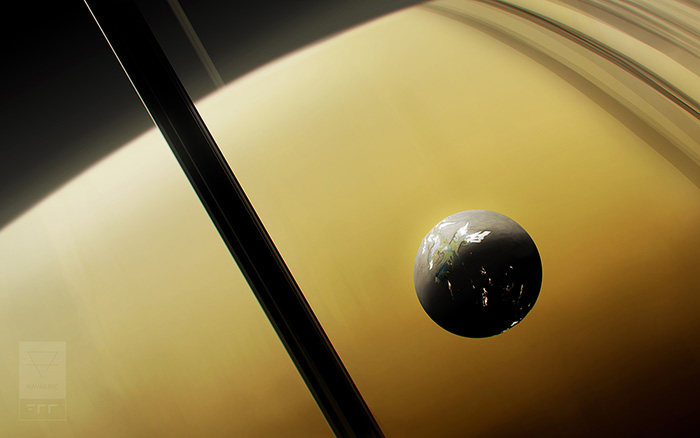

Rhea
| Rhea | |
|---|---|
| Rhea ▸Saturn ▸Sol▸ Terran Core Quarter | |
|

Rhea, seen in front of Saturn.
|
|
| Catalogue name | Sol g-V |
| Catalogued | 11M 672 |
| Demonyms | Rhean |
| Orbital characteristics | |
| Semimajor axis | 527,108 km |
| Orbital period | 4.52d |
| Eccentricity | 0.00126 |
| Sidereal day | 4.52d |
| Satellites | Numerous artificial installations |
| Physical characteristics | |
| Mass | 2.306 × 1021 kg |
| 0.031 M☾ | |
| Mean radius | 763.8 km |
| 0.44 R☾ | |
| Surface gravity | 0.264 m/s2 |
| 0.0269 g⊕ | |
| Climate and atmosphere | |
| Surface pressure | Trace |
| High temperature | -220 °C |
| 53 K | |
| Mean temperature | -201 °C |
| 72 K | |
| Low temperature | -174 °C |
| 99 K | |
| Habitation | |
| Population | 615.507 million |
| Affiliation | Terran Federation |
| Settled | 12M 103 |
| Largest settlement | Roche |
| Major settlements | Janus Harvey |
{kind=link}
Rhea is Saturn’s second largest moon, and its most populated. A moon homogeneously composed of water ice and silica, Terrans have been enclosing portions of its surface and terraforming the interior of the enclosures. Approximately one-quarter of the planet’s surface has been developed in such a manner. Rhea is the Sol system’s third-most populated single world, after Luna and Earth.
History
Rhea was settled by Terrans in 103, after the initial settlement of Titan. Rhea’s considerably small size had made Terrans hesitant to colonise the moon, and development was limited for over a century. In the early 200s century, subscale inertial control allowed for artificial gravity on lower gravity worlds, increasing desirability and reducing health risks associated with low gravity. However, Rhea’s lack of resources or subsurface ocean meant Saturn’s other moons were prioritised over it.
Circumstances regarding Rhea would soon shift dramatically: The emergence of the antimatter economy as well as carbon materials made the sectioned terraforming of worlds feasible. Of Saturn’s moons, Rhea was chosen given its size and relatively little development to disturb during construction of these habitats. The Solstice War, however, would stem this development for some time.
In the waning years of the, interest in terraforming Rhea had re-emerged from the newly-established Terran Federation as part of its Post-War Initiatives Programme. Rhea was regarded as a prime candidate for terraforming in an effort to stabilise the economy of the outer Solar system. By the mid 500s century, large swathes of Rhea had been terraformed, with expansions planned and underway.
In 611, during surveying for a terraformed habitat expansion, a Nesse Piano was found half-buried in a crater on Rhea’s south pole.
Geography
Rhea is a heavily cratered moon primarily composed of a mix of water ice and silica. Aside from changes in density based on depth, Rhea is very homogenous, with no easily defined lithosphere, mantle, and core.
Habitation
The vast majority of Rhea’s population live within its enclosed habitats, known as wards. These wards are enormous superstructures that cover whole regions of the moon, and are dug and recessed into the moon’s surface, with excavated materials used to construct the habitat itself or exported. Laminated synthetic diamond covers the excavated portion, and the interior of the ward is terraformed to resemble Earth. To accommodate for the Rhean day and night cycle, which lasts for over 100 hours, the clear transparent roof can dim or brighten to help compensate for difficulties with the circadian rhythm. Buildings, however, still adhere to a strict code regarding lighting regulations.
Within the wards, many opt to live in large city centres complete with demiarcologies, as per Terran norm, although a hefty proportion have opted to live out in the Rhean countryside. Rhea is a popular location for offworld residents to set up a seasonal retreat.
Although the wards are carefully climate controlled, they can be regarded as chilly, almost subarctic by Terrene standards. Temperatures hover between approximately 10 to 20 degrees during the daylight portion of the Rhean day, and can drop to as low as -12 during the night.
Outside the open terraformed wards, residents typically live under the Rhean surface. These colonies are often found near spacecraft construction facilities.
Society
Rhean attitudes can vary wildly, from general naivety and aloofness, to one that enjoys leading simple lives, although those attitudes tend to be skewed between the urban centres and rural sprawl respectively. A sizeable portion of Rheans tend to describe themselves as Rhean or Saturnian first, and Terran second.
Rheans highly value their cuisine culture, typically a mix of vegetables and seafood from the moon’s lakes or from aquafarms elsewhere in the Saturnian system. Cuisine is a strong highlight of Rhean customs, one that is double-edged: Expect your Rhean hosts to always ensure you are well-fed, but are unusually strict when it comes to restaurant service or even quality of your cooking.
Rheans typically align towards Social Democratic politics. Democratic confederalist and mutualist politics gain more modest support on Rhea.
Economy
The Rhean economy is mixed, mostly propped up by its service sector as well as the management of gas mining activities on Saturn. The low gravity and proximity of fuel make Rhea a popular stop in the Sol system for travelling aethercraft, as well as being an aethercraft manufacturing hub itself. Thanks to its terraformed wards, the Rhean economy sees much income from agriculture and aquaculture, as well as craftspeople eager to take advantage of the local exotic materials. Tourism is also a popular business on Rhea, given the moon’s unique social atmosphere as well as picturesque scenery of its Earthlike terraformed regions superimposed over a sky dominated by Saturn.